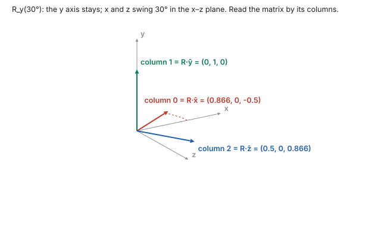
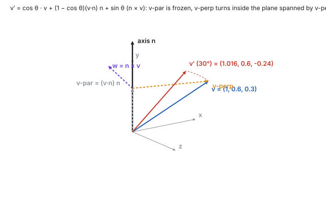
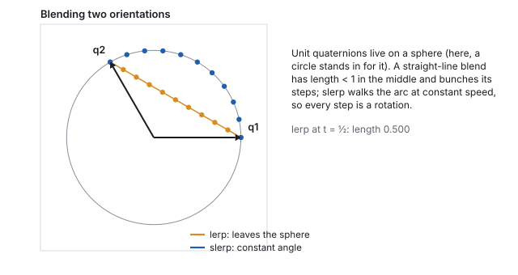
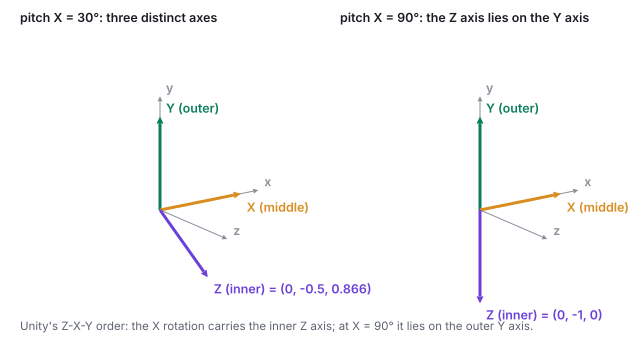
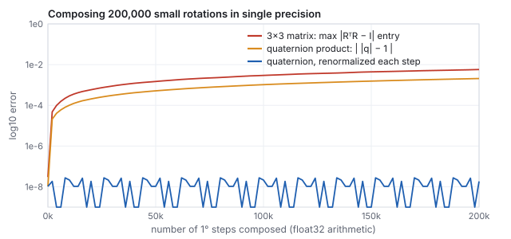

This chapter links to the course’s interactive demos and uses MathJax for its
formulas. Read it through the course website (or download the file and open it in a
browser); a Canvas inline preview will reach neither the demos nor the math.
All chapters.
Rotation: Axis-Angle, Quaternions, Euler Angles
CSS 551 · Advanced 3D Computer Graphics · course text
Course text · one operation, four representations, and why engines store the quaternion. Assigned by your offering’s course site; pairs with the lecture on vectors and rotations.
A rotation keeps lengths and angles and fixes the origin, which makes it the best-behaved transform in graphics and, at the same time, the hardest to store well. A matrix applies it fast but drifts and cannot be blended; an axis and an angle say what it is; a quaternion stores it in four numbers that compose by multiplication and blend along a sphere; three Euler angles read nicely and lock. This chapter builds the four in that order, derives Rodrigues’ formula from the projection split of the vectors chapter, verifies the quaternion sandwich on a point by hand, measures the drift with real single-precision arithmetic, and shows the lock happening. One axis and angle, \((0, 1, 0)\) at \(30^\circ\), runs through the worked examples and the live demo.
Definition (rotation)
A rotation is a linear map \(R\) that preserves the dot product,
\((R\mathbf{u})\cdot(R\mathbf{v}) = \mathbf{u}\cdot\mathbf{v}\), and preserves handedness.
Preserving dot products preserves lengths and angles; linearity fixes the origin. In
matrix terms, \(R^{\mathsf T}R = I\) and \(\det R = +1\): the columns of \(R\) are unit and
mutually perpendicular. (With \(\det R = -1\) the map is a reflection, which also keeps
lengths and angles but turns a right hand into a left one.)
Because a rotation is linear and fixes the origin, it is completely determined by where
it sends the three basis vectors. That one fact makes rotation matrices readable, which is
the next section.
2 · The rotation matrix: columns are where the axes land
In two dimensions, a point at radius \(r\) and angle \(\varphi\) is
\((r\cos\varphi, r\sin\varphi)\); rotating it by \(\theta\) gives
\((r\cos(\varphi + \theta), r\sin(\varphi + \theta))\). Expand with the angle-addition
formulas and regroup in terms of \(x = r\cos\varphi\), \(y = r\sin\varphi\):
The one derivation everything else lifts from. Feed the matrix \((1, 0)\) and you get its first column, \((\cos\theta, \sin\theta)\): where the \(x\) axis lands. Feed it \((0, 1)\) and you get the second column: where the \(y\) axis lands.
The column reading
For any linear map, column \(j\) of the matrix is the image of the \(j\)-th basis vector.
A rotation matrix is therefore its rotated basis vectors, stacked as columns. You can read
where any axis goes without multiplying anything.
Rotation about the \(y\) axis leaves \(y\) alone and spins the \(x\)–\(z\) plane, so the 2D
block drops into the \(x, z\) slots:
Watch the sign pattern: for \(R_y\) the \(+\sin\) sits top-right, the opposite of the
textbook \(R_z\), because in a right-handed frame with \(y\) up, a positive turn tips the
\(x\) axis toward \(-z\). Column 0 says so: \((\cos\theta, 0, -\sin\theta)\).

\(R_y(30^\circ)\) read by its columns, computed by the course library. At \(90^\circ\) column 0 is \((0, 0, -1)\): the old \(x\) axis points down \(-z\). Predict any axis’s destination by reading a column.
3 · Axis-angle: Rodrigues’ formula
A rotation can be about any unit axis \(\hat{\mathbf{n}}\) by any angle \(\theta\).
That pair is the most human representation (“turn 40 degrees about this stick”),
and applying it to a vector needs only the projection split and one cross product.
Split \(\mathbf{v}\) into the part along the axis, which a rotation about that axis cannot move, and the part across it: \(\mathbf{v}_\parallel = (\mathbf{v}\cdot\hat{\mathbf{n}})\hat{\mathbf{n}}\), \(\mathbf{v}_\perp = \mathbf{v} - \mathbf{v}_\parallel\).
Build the second axis of the rotation plane: \(\mathbf{w} = \hat{\mathbf{n}}\times\mathbf{v}\) is perpendicular to both \(\hat{\mathbf{n}}\) and \(\mathbf{v}_\perp\) and has the same length as \(\mathbf{v}_\perp\), since \(\|\hat{\mathbf{n}}\times\mathbf{v}\| = \|\mathbf{v}\|\sin\angle(\hat{\mathbf{n}},\mathbf{v}) = \|\mathbf{v}_\perp\|\).
Turn inside the plane, a 2D rotation with \(\mathbf{v}_\perp\) and \(\mathbf{w}\) as the two axes: \(\mathbf{v}_\perp' = \cos\theta\,\mathbf{v}_\perp + \sin\theta\,\mathbf{w}\).
Add the frozen part back and substitute.
Rodrigues’ rotation formula
\[
\mathbf{v}' \;=\; \cos\theta\,\mathbf{v} \;+\; (1 - \cos\theta)\,(\mathbf{v}\cdot\hat{\mathbf{n}})\,\hat{\mathbf{n}} \;+\; \sin\theta\,(\hat{\mathbf{n}}\times\mathbf{v}) .
\]
Every term is a dot, a cross, or a scale. Apply it to \(\hat{\mathbf{x}}, \hat{\mathbf{y}}, \hat{\mathbf{z}}\) and the three results are the columns of the rotation matrix.

The construction on \(\mathbf{v} = (1, 0.6, 0.3)\) about \(\hat{\mathbf{n}} = (0,1,0)\): \(\mathbf{v}_\parallel = (0, 0.6, 0)\), \(\mathbf{v}_\perp = (1, 0, 0.3)\), \(\mathbf{w} = (0.3, 0, -1)\), both of length \(1.044\). The rotated vector keeps its \(y\) component and swings the rest.
Worked example (Rodrigues on one vector, and against the matrix)
\(\hat{\mathbf{n}} = (0,1,0)\), \(\theta = 30^\circ\), \(\mathbf{v} = (1, 0.6, 0.3)\), so \(\mathbf{v}\cdot\hat{\mathbf{n}} = 0.6\) and
\(\hat{\mathbf{n}}\times\mathbf{v} = (1\cdot0.3 - 0\cdot0.6,\; 0\cdot1 - 0\cdot0.3,\; 0\cdot0.6 - 1\cdot1) = (0.3, 0, -1)\).
\[
\mathbf{v}' = 0.866\,(1, 0.6, 0.3) + 0.134\cdot0.6\,(0,1,0) + 0.5\,(0.3, 0, -1)
= (0.866 + 0.15,\; 0.520 + 0.080,\; 0.260 - 0.5) = (1.016, 0.6, -0.240).
\]
The library’s matrix \(R_y(30^\circ)\) applied to the same \(\mathbf{v}\) gives
\((1.016, 0.6, -0.240)\): the formula and the matrix are one object reached two ways.
Worked example (build \(R_y(30^\circ)\) column by column)
The three rows are the three columns of the matrix in Section 2, digit for digit, and they are what the demo’s \(R\) panel shows.
See it liveAxis-angle rotation:
a cube spins about a draggable axis; the panel prints the matrix and the quaternion,
both from the course’s own code. Drag the angle and watch column 0 trace
\((\cos\theta, 0, -\sin\theta)\).
4 · Quaternions
Why not store the matrix? Nine numbers with six hidden constraints, for three degrees of
freedom. Composing matrices in floating point erodes the constraints and shapes begin to
shear (Section 7 measures it); averaging two rotation matrices is not a rotation, so
orientations cannot be blended. A quaternion has four numbers, one constraint, composes by
multiplication, and blends along a sphere.
Definition (unit quaternion of a rotation)
For axis \(\hat{\mathbf{n}}\) and angle \(\theta\),
\[
q = \big(\sin\tfrac{\theta}{2}\,\hat{\mathbf{n}},\; \cos\tfrac{\theta}{2}\big) = (x, y, z, w),
\]
three “vector” components and one scalar \(w\), in the storage order of three.js and
Unity. It has unit length: \(x^2 + y^2 + z^2 + w^2 = \sin^2\tfrac\theta2 + \cos^2\tfrac\theta2 = 1\).
The identity is \((0, 0, 0, 1)\). The inverse of a unit quaternion is its conjugate,
\(q^{-1} = (-x, -y, -z, w)\): same axis, opposite angle.
Worked example (the quaternion for \(R_y(30^\circ)\))
Half angle \(15^\circ\): \(\sin 15^\circ = 0.259\), \(\cos 15^\circ = 0.966\), so
\(q = (0, 0.259, 0, 0.966)\). Only the \(y\) component is nonzero because the axis is \(y\).
Unit length: \(0.259^2 + 0.966^2 = 0.067 + 0.933 = 1.000\). This is the demo panel’s \(q\) row.
The half angle is the one surprise. It comes from how a quaternion rotates a point: by a
sandwich, \(p' = q\,p\,q^{-1}\), which applies the half-turn twice. Expanded
into vector operations (with \(\mathbf{q}_v = (x, y, z)\)) the sandwich needs no
trigonometry at all:
Worked example (the sandwich on one point)
Rotate \(\mathbf{p} = (1,0,0)\) by \(90^\circ\) about \(y\): \(q = (0, 0.707, 0, 0.707)\), \(\mathbf{q}_v = (0, 0.707, 0)\), \(w = 0.707\).
\(R_y(90^\circ)\) sends \((1,0,0)\) to \((0,0,-1)\) (its column 0). The quaternion and the matrix agree.
5 · Composition and interpolation
Do rotation \(q_1\), then \(q_2\): multiply, \(q = q_2\,q_1\), with the one nearest the point
applied first, the same right-to-left reading as matrices. The product is
sixteen multiplies against a 3×3 product’s twenty-seven, and the result stays a
rotation after a single renormalization. It is not commutative, exactly as rotations are
not: pitch then yaw is not yaw then pitch.
Worked example (compose two rotations, check against the matrices)
\(R_y(30^\circ)\) first, then \(R_x(30^\circ)\): \(q_y = (0, 0.259, 0, 0.966)\), \(q_x = (0.259, 0, 0, 0.966)\), and \(q = q_x\,q_y\):
\[
q = (0.25,\; 0.25,\; 0.067,\; 0.933), \qquad |q|^2 = 1.000 .
\]
Applied to \((1, 2, 3)\) by the sandwich: \((2.366, 0.683, 2.817)\). The matrix product
\(R_x(30^\circ)\,R_y(30^\circ)\) applied to the same point: \((2.366, 0.683, 2.817)\). The
composite is itself one rotation: reading \(q\) back, its angle is
\(2\arccos 0.933 = 42.2^\circ\) about the axis \((0.695, 0.695, 0.186)\), a single turn
about a tilted axis that no one specified. Two rotations about two axes are always one
rotation about a third.
Blending. To ease a camera from orientation \(q_1\) to \(q_2\), walk the
short arc between them on the unit sphere at constant angular speed
(slerp, spherical linear interpolation). A straight-line blend leaves the sphere:
halfway between two orientations \(120^\circ\) apart, the average quaternion has length
\(0.5\), and renormalizing it gives a rotation that moves fast in the middle and slow at
the ends.

Unit quaternions live on the unit sphere in four dimensions; a circle stands in for it. Every slerp step is a valid rotation and the steps are equal; the lerp steps are neither.
\[
\mathrm{slerp}(q_1, q_2, t) = \frac{\sin\big((1-t)\Omega\big)}{\sin\Omega}\,q_1 + \frac{\sin(t\,\Omega)}{\sin\Omega}\,q_2, \qquad \cos\Omega = q_1\cdot q_2 .
\]
(If \(q_1\cdot q_2 < 0\), negate one of them first: \(q\) and \(-q\) are the same rotation,
and the short arc is the one between the nearer pair.) Stepping an animation by composing
the same small quaternion each frame is a discretized slerp; it is how a turntable, a
door, or an orbiting camera is animated without ever touching a matrix.
Worked example (slerp midpoint)
From the identity \((0,0,0,1)\) to \(R_y(120^\circ)\), \(q_2 = (0, 0.866, 0, 0.5)\):
\(\cos\Omega = 0.5\), \(\Omega = 60^\circ\), and at \(t = \tfrac12\) both weights are
\(\sin 30^\circ / \sin 60^\circ = 0.577\), so the midpoint is
\(0.577\,(0, 0.866, 0, 1.5) = (0, 0.5, 0, 0.866)\), which is exactly the quaternion of
\(R_y(60^\circ)\): half the turn, as it should be. The plain average
\((0, 0.433, 0, 0.75)\) has length \(0.866\) and is not a rotation.
6 · Euler angles and gimbal lock
The human way to say an orientation: three rotations about three axes, in a fixed order.
Unity’s Quaternion.Euler(x, y, z) applies \(Z\) first, then \(X\), then
\(Y\), so the world-space product is \(R_y\,R_x\,R_z\). Three readable numbers, “pitch 20,
yaw 45, roll 0”, but the order is a convention, and different tools pick different
ones, which is the usual cause of an imported model arriving rotated wrong.

The effective axes of the three Euler rotations in the world, computed from the rotation matrices. The middle rotation (about \(X\)) carries the inner \(Z\) axis with it; at \(X = 90^\circ\) the inner axis has been tipped onto the outer one.
Worked example (where the inner axis goes)
The inner rotation is about \(\hat{\mathbf{z}}\), but after the middle rotation \(R_x(x)\)
its axis in the world is \(R_x(x)\,\hat{\mathbf{z}} = (0, -\sin x, \cos x)\). At
\(x = 30^\circ\) that is \((0, -0.5, 0.866)\), a distinct direction. At \(x = 90^\circ\) it is
\((0, -1, 0)\), the outer \(Y\) axis itself. Then rotating about \(Z\) and rotating about
\(Y\) produce the same motion, three sliders give two effects, and one rotational degree of
freedom is gone until \(x\) is backed off \(90^\circ\). That dead direction is
gimbal lock.
Nothing is wrong with the orientation at pitch \(90^\circ\); the object is fine. It is the
chart \((\text{yaw}, \text{pitch}, \text{roll})\) that goes singular there, the way longitude
is undefined at the poles. A quaternion names an axis and an angle with no nested frames,
so there is no configuration where two of its parts align. That is the engineering reason
engines store the quaternion and show Euler angles only for editing:
transform.rotation is a quaternion under the hood, always.
7 · Drift, measured
The claim “matrices drift” can be measured. Compose the same \(1^\circ\) rotation
200,000 times in single-precision arithmetic three ways: as a \(3\times3\) matrix product, as
a quaternion product, and as a quaternion product renormalized after every step.

Single-precision arithmetic (every operation rounded to float32), 200,000 compositions of \(R_y(1^\circ)\). The matrix’s columns stop being orthonormal by \(6\times10^{-3}\), enough to shear a model visibly; the quaternion’s length drifts by \(2\times10^{-3}\), and one division per step removes it entirely.
The matrix needs six constraints re-imposed (a full re-orthonormalization); the quaternion
needs one (divide by its length), and that is cheap enough to do every frame. A game running
at 60 frames per second accumulates 200,000 compositions in under an hour.
8 · Exercises
Exercise 1 (columns)
Write \(R_z(90^\circ)\) by reading where the axes land, without the formula.
Solution
A right-handed quarter turn about \(z\) sends \(\hat{\mathbf{x}}\) to \(\hat{\mathbf{y}}\), \(\hat{\mathbf{y}}\) to \(-\hat{\mathbf{x}}\), and leaves \(\hat{\mathbf{z}}\). Columns \((0,1,0)\), \((-1,0,0)\), \((0,0,1)\), so
\(R_z(90^\circ) = \begin{pmatrix} 0 & -1 & 0 \\ 1 & 0 & 0 \\ 0 & 0 & 1 \end{pmatrix}\).
Exercise 2 (Rodrigues)
Rotate \(\mathbf{v} = (1, 1, 0)\) by \(90^\circ\) about \(\hat{\mathbf{n}} = (0, 0, 1)\) with Rodrigues’ formula, and check with the column reading.
Solution
\(\mathbf{v}\cdot\hat{\mathbf{n}} = 0\), \(\hat{\mathbf{n}}\times\mathbf{v} = (0\cdot0 - 1\cdot1,\; 1\cdot1 - 0\cdot0,\; 0) = (-1, 1, 0)\); \(\cos 90^\circ = 0\), \(\sin 90^\circ = 1\), so \(\mathbf{v}' = (-1, 1, 0)\). By columns: \(\hat{\mathbf{x}}\to\hat{\mathbf{y}}\) and \(\hat{\mathbf{y}}\to-\hat{\mathbf{x}}\), so \((1,1,0)\to(0,1,0) + (-1,0,0) = (-1, 1, 0)\).
Exercise 3 (quaternion)
Write the quaternion for \(180^\circ\) about \((1, 1, 0)/\sqrt2\), and use the sandwich formula to rotate \((1, 0, 0)\).
Solution
Half angle \(90^\circ\): \(q = (0.707, 0.707, 0, 0)\), \(w = 0\). \(\mathbf{q}_v\times\mathbf{p} = (0.707, 0.707, 0)\times(1,0,0) = (0, 0, -0.707)\); the \(2w\) term vanishes; \(\mathbf{q}_v\times(0, 0, -0.707) = (0.707\cdot(-0.707) - 0,\; 0 - 0.707\cdot(-0.707),\; 0) = (-0.5, 0.5, 0)\); doubled, \((-1, 1, 0)\); sum \((0, 1, 0)\). A half turn about the diagonal swaps \(x\) and \(y\).
Exercise 4 (composition)
Show that \(q_y\,q_x \ne q_x\,q_y\) for the two \(30^\circ\) quaternions of Section 5 by computing the \(z\) component of each.
Solution
With \(q_x = (a, 0, 0, c)\) and \(q_y = (0, a, 0, c)\), \(a = 0.259\), \(c = 0.966\): \((q_x q_y)_z = x_1 y_2 - y_1 x_2 = a\cdot a - 0 = 0.067\) and \((q_y q_x)_z = 0 - a\cdot a = -0.067\). Opposite signs: the two orders differ, as they must.
Exercise 5 (the lock, in another order)
For an \(X\)-\(Y\)-\(Z\) order (world product \(R_z R_y R_x\)), which angle locks, and at what value?
Solution
The middle angle, \(Y\), at \(\pm90^\circ\): the inner \(X\) axis becomes \(R_y(90^\circ)\hat{\mathbf{x}} = (0, 0, -1)\), parallel to the outer \(Z\) axis. In every order it is the middle rotation at a quarter turn that aligns the inner and outer axes.